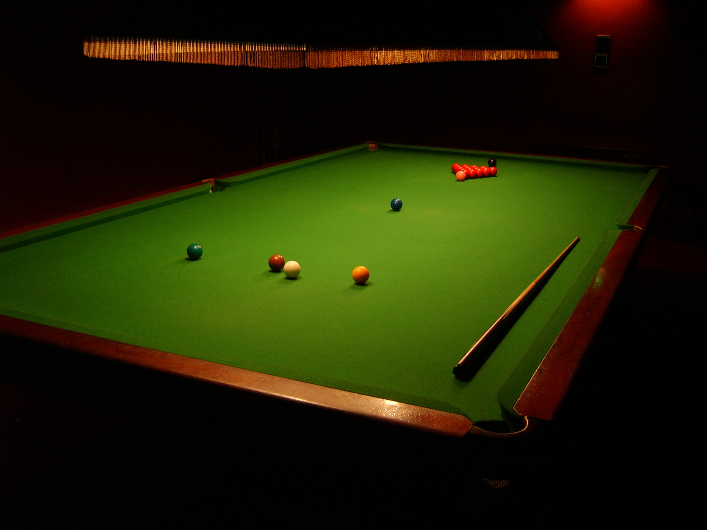

Snooker is a cue sport played on a rectangular table covered with a green cloth called baize, with six pockets, one at each corner and one in the middle of each long side. First played by British Army officers stationed in India in the second half of the 19th century, the game is played with twenty-two balls, comprising a white cue ball, fifteen red balls, and six other balls—a yellow, green, brown, blue, pink, and black—collectively called the colours. Using a cue stick, the individual players or teams take turns to strike the cue ball to pot other balls in a predefined sequence, accumulating points for each successful pot and for each time the opposing player or team commits a foul. An individual frame of snooker is won by the player who has scored the most points. A snooker match ends when a player reaches a predetermined number of frames.
The Snooker Table
- A snooker table measures 12 feet by 6 feet.
- A snooker table has 6 holes.
- A snooker table has 15 red balls and 6 coloured balls totaling 21 balls